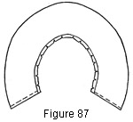

1930—Millinery Processes
by Carlotta M. Brown
PATTERNS
Copying
For the inexperienced worker a paper pattern is a great help. These patterns are often made by copying the brim or crown of a fabric frame.
Pattern for a Flat Brim
Place a flat piece of tissue, paper on the under side of the brim and fasten it in place with pins at the front, back, and sides. The paper must be perfectly smooth, for it is on this pattern that the accurate cutting of the outside covering depends. With the paper in place, turn the brim right side up, and through the head-size opening mark the exact head size by running a pencil around the oval opening. If the frame is one with the crown attached, hold the frame against the light and trace the exact outline of the head size around the bottom of the crown. In both cases the circumference of the brim must be marked to secure the correct line of the outer edge. Mark the front and the back of the pattern.
Remove the pattern, cut away the extra paper from around the outer circle, allow an extra inch for the tabs inside the head-size marking toward the center, and cut away the small oval remaining. The extra inch allowed for tabs is cut into small pieces (on the straight, not on the slanting, line) ¾ inch wide, terminating at the oval that outlines the head size (Fig. 84).
Pattern for a Mushroom or Rolled Brim
This process differs from the one used for the flat brim in that the pattern is made from a straight strip of paper with a seam at the back; for no brim with a decided droop or turn can be covered with an unseamed piece of material. When material of great stretching tendency is used for the covering of a shape slightly mushroom, the seam on the top covering is not needed. Even then, however, the facing must be cut for a seam because of the concave surface of the under brim. The opposite is true when slightly rolled frames are used. If the hat is of decided roll or droop or is irregular in shape, the seam must be used on both the top and the facing that the material may lie flat (Fig. 86).
The strip of paper used for this pattern is cut 1 inch wider than the depth of the widest part of the brim. Start pinning at the back of the hat, working the straight edge of the paper carefully around and flush with the edge of the brim. Fullness will be found next to the head size, and this must be taken out or the covering will not lie flat. To do this, make small darts in the fullness, pinning into place at the head size until the exact duplicate of the brim is obtained. The pins must be put in securely, for the one pin that may drop out and release a dart when the paper is removed will throw the whole pattern out of line. Before removing the pattern from the brim run a pencil line at the head size so the depth of the tabs may be established. Allow 1 inch for the tabs and cut away any extra paper (Fig. 85).
When removed from the brim these two patterns differ in shape. The flat pattern will have an unbroken outside line, and the mushroom pattern will have a decided curve with a V-shaped piece missing at the back (Figs. 86-87).
Figure 85. Darts taken in plain strip of paper when making a pattern of a rolled or drooping brim.
Figure 86. Finished pattern, showing the head-size tabs and the v-opening at the back.
Figure 87. Pattern cut from brim with extreme curve, showing wide back opening.
Drafting
The selection of a frame is the first important step in hat construction. Although commercial frames may be purchased, the variety of shapes is usually limited; therefore drafting the frame is an excellent way to show individual preferences. By this method any shape desired may be made from a flat piece of frame material.
Drafting a brim. Cutting a circle. Cut a square of wrapping paper about 14 or 15 inches on each side (Fig. 88, A). This square must be of such size that when folded into quarters each folded side measures exactly the width of the brim desired plus half the head size (Fig. 88, B). After folding into quarters, fold again on the diagonal; fold the resulting triangle again through the center. Then fold along the diagonal. Fold the resulting triangle to obtain the shape shown in Fig. 88, C. Mark from the point of the folded paper on each side of the triangle the exact radius decided upon for the brim circle, and cut. When the paper circle is unfolded, there will be many definite lines to be seen. These represent the points at which the brim is to be slashed to form different shapes.
Figure 88. Cutting circle. A, square of paper from which circle is to be cut; B, square folded to quarters; C, quarter-folded square further folded twice in succession along the diagonal, and marked for cutting.
Cutting out the head size. The method of measuring the head size will be found under Measurements. Two methods are used for cutting the head size.
1. Unfold the paper circle until one fourth open. Measure from the central point, first up and then across, to determine the length and the width of the head. size, one half the length of the head size for length and one half the width of the head size for width. This will make the head size slightly oval. Mark with pencil. Before cutting make a second marking 1 inch toward the center and parallel to the first to allow for the head-size tabs. Make the cut along this inner line. The tabs may be slashed to the outer circle at intervals of ¾ of an inch around the entire head size (Fig. 89).
Figure 89. Showing shaping of head size and method of making oval from a circle.
2. Take the measurement of the head size plus 1 inch for lapping, and cut a length of wire this size. Join the wire in a circle and shape it on the head. Place this wire on the paper circle, center for center, and mark the head size. Draw a parallel line 1 inch nearer the center for the head-size tabs. Cut along this inner circle and slash tabs as before. Pin a 1-inch strip of wrapping paper to the tabs. This makes a headband so that the pattern may be placed on the head (Fig. 90).
Figure 90. Drafted pattern.
If the head size is 24 inches, the length of the oval should be 8½ inches and the width 7 inches. Decreasing the head size 1 inch subtracts ¼ of an inch from the measurements of length and width given above; increasing the head size adds to the measurements in the same proportion.
Shaping the brim. To make a drooping or a curved brim slash along the creases left from folding, for they represent the definite points of the hat brim. These slashes are made first at the quarters and then at the eighths if much upward or downward droop is desired, and are lapped and pinned to produce the curved effect. After trying the hat on the head and being sure of the shape, the paper draft is slashed through the depth of the brim at the back. This may then be placed on the frame material in a flat position, pinned with the front of the pattern on the straight thread of the material, and cut.
Figure 91. Slashes lapped and pinned to form curved brim.
Crowns
Oval or round crown top. Cut a circle 5 or 6 inches in diameter from a square of paper, testing on a frame the size of the top before cutting from the fabric. When using an oval top, fold the circle into quarters and cut from the folded edge, decreasing as the center is approached so that a perfect oval is formed (Fig. 89).
Tailored, or fitted, crown. Cut a slightly oval piece of paper which will be large enough to cover the top and the curve of the crown and to extend about half an inch over the side crown (Fig. 22).
As the top of this type of crown is usually smaller than the bottom, it is not possible to use a perfect bias for the side crown. Detach the crown from the brim, marking the center front of the crown and the center front of the brim. Next cut a strip of tissue paper the depth of the side crown and place the edge of this strip at the bottom of the crown, pinning securely in place and taking up darts where they are needed (Fig. 92).
Figure 92. Pattern for fitted, or tailored, side crown. One straight edge of the tissue-paper strip pinned flush with the base of the crown, with pleats adjustetd at the opposite edge, so that the paper will conform to the shape of the crown.
Upright sectional crown. Measure for exact head size (Fig. 81). Plan the number of sections to be used, divide the head size into equal parts, plus a quarter-inch seam allowance on each side of every section. Cut a strip of paper 9 inches long and as wide as required for the width of the crown base. Fold lengthwise. To form the sections, start cutting at the point 2½ inches above the base of the folded strip of paper where the lengthwise edges meet. Slope very gradually, following the diagram measurements until a point is reached at the top of the section (Fig. 93). If a smaller or a larger head size is to be used, decrease or increase the measurements and cut as directed.
Figure 93. Sectional crowns, showing the more definite point at the top of the crown as the number of sections increases. A, four-sectional crown; B, five-sectional crown; C, six-sectional crown.
Side crown and sectional top in one piece. Cut a strip of paper 9 inches wide and the length of the head size plus ½ inch at each end of the strip for the joining at the center back of the crown. Fold this strip into as many folds as the number of top sections to be used. Take as a pattern a sectional crown of the same number of pieces, measure down from the point of the crown along the curved side of the section to a distance of from 4 to 4½ inches, and cut. This will give the sectional top with the plain side in one piece (Fig. 94).
Separate sectional top. If a narrow top is wanted, cut from a sectional pattern of the same number of sections, making the sections long or short as desired. For a large flat top less shaping of the crown is necessary. Cut a circle of the required size from a square of paper (Fig. 88). Open the circle one half and refold into half as many pieces as the number of sections to be cut. Starting at the base of the crown top, trim half an inch from each side, sloping to a disappearing point at about one half the depth of the section (Fig. 95). Before unfolding, slit along each crease to the tip of the section to separate the sections.
Side crown with scalloped edge and oval top. Cut a strip of paper 5 inches deep and the length of the head size plus a half-inch seam allowance at each end of the strip for joining. Fold the strip into equal parts as for the upright sectional crown. Measure 3 inches from the bottom of the strip to establish the point at which the scallops are to be started. Make the scallops in perfect half circles (Fig. 96).
Since the slashes dip into the side crown for nearly half its depth, the oval is cut larger than the average oval. Make the oval 11 inches wide and 12 inches long, marking quarters.
One-piece circular tam. Cut a circle 16 inches in diameter from a square of paper (Fig. 88).
Two-piece circular tam. Cut two circles 12 inches in diameter from a square of paper (Fig. 88).
Beret tam. Cut two circles 11 inches in diameter from a square of paper (Fig. 88).
Tam with circular top and fitted under crown. Cut an 11-inch circle from a square of paper (see Fig. 88). The distance around this circle is 35 inches; the head-size measurement varies with the individual. Cut a straight strip of paper 5 or 6 inches wide and 35 inches long, plus a half-inch seam allowance at each end. Fold the straight strip into eighths, and crease. Place one edge of the straight strip along the outer edge of the circle, pinning about every 2 inches. Make darts at the quarters and eighths of the creased strip to form the head size, taking each dart in an equal amount until the correct head size is established. Remove the pins from the outer edge but not from the darts at the head size. The seam joining is placed at the right side (see Fig. 36).
Tam with Fitted Under Crown in Two Parts
Figure 97. Layouts of pattern for two-piece fitted tam under crown. A, front; B, back.
Pattern for top. Cut a 12-inch circle (Fig. 88).
Front under crown (Fig. 97, A). Cut a strip of paper 18 inches long and 7 inches wide. Fold end to end, creasing at the center on the width of the strip. For the outer cutting line measure down 4 inches along the cut ends, and mark. Start cutting at this point and slope gradually upward until a flowing curve is obtained which ends at the top of the creased edge. For the inner cutting line measure down along the fold 5 inches, and mark. Mark a point 6 inches from the center fold along the bottom of the strip and toward the cut ends. Join these two markings with a pencil line in an even curve, and cut. Join by a straight line the points at which the inner and outer cutting lines have been started. Cut along this line.
Back under crown (Fig. 97, B). Cut a strip of paper 15½ inches long and 8½ inches wide. Fold end to end, creasing at the center on the width of the strip. For the outer cutting line measure down 5¼ inches along the cut ends, and mark. Start cutting at this point and slope gradually upward until a flowing curve is obtained which ends at the top of the creased edge. For the inner cutting line measure down along the fold to a depth of 4¼ inches, and mark. Mark a point 4¼ inches from the center fold along the bottom of the strip toward the cut ends. Connect these points in an even curve, and cut. Join by a straight line the points at which the outer and inner cutting lines have been started, and cut along this line.
Six-sectional flared tam. Cut a strip of paper 7 inches wide and 10½ inches long and fold lengthwise. Measure 4½ inches from the bottom of the paper along the lengthwise fold, and mark; this represents the widest part of the section (Fig. 98). Next measure 2¼ inches from the folded edge along the base, and mark; this marks the width of the base of the crown section. Start cutting at this point, sloping outward gradually until the marking for the widest part of the section is reached. Make a rounded corner instead of a point and slope inward until the extreme point at the top of the crown is reached. Six sections made by these measurements will give a head size of 24 inches.
Sectional crown with sections running from side to side. Cut a strip of paper 18 inches long and 4½ inches wide. Fold in half along the length of the strip. Fold again end to end. Measure ¾ of an inch up on the lengthwise fold; cut, gradually sloping the curve to the upper corner of the other edge (Fig. 99, A). This forms the top of the crown and extends from the right to the left side.
Two crescent-shaped pieces are joined to each side of this central strip. Cut a strip of paper 13¾ inches long and 6½ inches wide. Bring the cut ends together and crease at the center. For the outer cutting line measure down 5¾ inches along the cut ends, and mark. Start cutting at this point and slope gradually upward until a flowing curve is obtained which ends at the top of the creased edge. For the inner cutting line measure down along the fold to a depth of 4 inches, and mark. Mark a point 5 1/8 inches from the center fold along the bottom of the strip toward the cut ends. Join these two markings with a pencil line to be assured of an even curve, and cut. Join by a straight line the points at which the inner and outer cutting lines have been started. Cut off the ends of the crescent along this line (Fig. 99, B).
Two semi-oval pieces are next cut to complete the back and the front of the crown. Cut an oval 10 inches long and 8½ inches wide. This oval is then folded through its width and cut along the folded line, making two semi-oval-shaped pieces (Fig. 99, C). These are joined to the inner curved line of the two crescents.
Figure 99. Layouts of pattern for sectional crown with sections running from side to side. A, central piece running over top of crown; B, crescents joined to central piece; C, semi-ovals joined to crescents.
Fitted flange. Make a pattern for the brim as shown in pattern for flat brim (Fig. 84). Measure down an equal distance from the outer circle of the brim to determine the cutting line for the flange. Mark the line with pencil, and cut. If the brim has a decided roll or droop, the flange will have a straight seam joining at the back.
Pattern-placing
The placing of the pieces of the pattern on the material should be carefully planned before any cutting is done. Brim pieces are usually cut from the strip of material first, but care must be taken that sufficient material of the required shape is left for the crown, folds, bindings, and other parts.
If two different materials, such as velvet for the top and taffeta for the facing, are to be used on an irregular brim, the pattern must be placed carefully so that each material will come where it is desired. It is not unusual for the beginner to discover after the cutting is done that she has cut velvet for the facing and taffeta for the top. If velvet is to be used for the top, lay the velvet on the table with the nap up and with the right side of the pattern up also. If used for a facing, lay the nap down; but the right side of the pattern is still placed right side up (consider the "right side" of the pattern as that side which lay against the facing of the original frame from which the pattern was made).
In cutting large brim pieces from a fabric both ends of which are on the straight, place the brim pieces at opposite corners, with the center front of the pattern on the straight thread of the material. The material in between may then be used for bias pieces (Fig. 100).
Figure 100. Placing of brim pieces, crown top, and bias strips when cutting from strip of material with both ends on the straight.
If one end of the fabric is on the bias, place the large brim pieces with the center front on the straight thread of the material and at the straight end of the material. This leaves the long bias end for all necessary bias strips (Fig. 101).
Figure 101. Placing of brim pieces, crown top, and bias strips when cutting from strip of material with one end on the bias and one end on the straight.
If the whole hat is to be made of bias strips it is better to purchase material with both ends on the bias. This will eliminate any waste of material. Proceed as in cutting a bias (see Bias, Fig. 1).